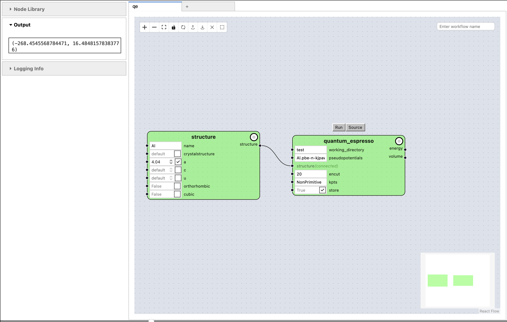
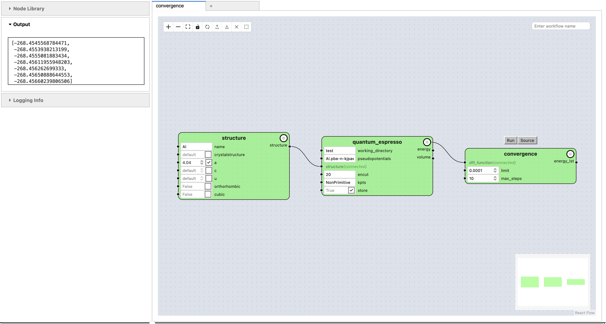
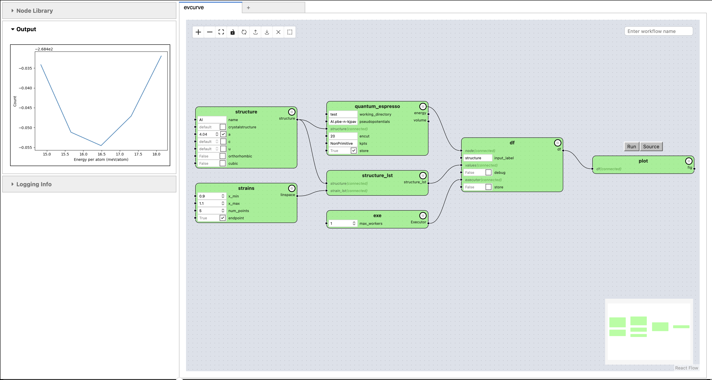

Advanced Features#
After the first notebook introduced the visual programming interface of pyiron and the second notebook introduced the corresponding Python interface, this third notebook introduces advanced features to help with the development of materials science workflows. In the following, the caching of workflows, functional programming and the up-scaling of workflows are briefly introduced each with an example using the visual programming environment followed by a reduced example using the Python interface to demonstrate the technical details.
All examples us the electronic structure code quantum espresso to highlight the impact of these features for electronic structure calculation. Still no prior knowledge of electronic structure simulation is required for the understanding of these examples and the primary focus is the introduction of the technical functionality.
Caching#
In contrast to simple Python functions typical materials science simulation require substantial computational resources. So one essential advantage workflow frameworks is the ability to cache intermediate results. When the same calculation with the same input parameters is repeated at a later point, then the previous result is reloaded from the cache and returned to the user.
Starting with an electronic structure calculation for Aluminium. For this purpose the Bulk() node is imported to create an Aluminium bulk structure in addition to the calculate_qe() node for computing the volume and energy using the quantum espresso electronic structure simulation code. The Bulk() node takes an element as input, for Aluminium Al, in addition to the lattice constant a=4.04. Followed by the calculate_qe() node which in addition to the atomistic structure from the Bulk() node receives a working directory to write temporary input and output files a pseudo potential which provides an approximation for the electronic interaction, for Aluminium "Al.pbe-n-kjpaw_psl.1.0.0.UPF" the plane wave energy cutoff in Rydberg encut=20 and the kpoint mesh for sampling the wave function in reciprocal space kpts=(3, 3, 3).
The important option for caching the results is the store=True parameter of the calculate_qe() node. Setting store=True enables the cache. The results are stored in ~/pyiron_core_data/.storage, so when the calculation is executed a second time the results are reloaded from the cache.
from core import Workflow, Node, as_function_node
from core.gui import PyironFlow
from pyiron_nodes.atomistic.structure.build import Bulk
from pyiron_nodes.atomistic.engine.quantumespresso import calculate_qe
wf = Workflow("qe")
wf.structure = Bulk(name="Al", a=4.04)
wf.quantum_espresso = calculate_qe(
working_directory="test",
pseudopotentials="Al.pbe-n-kjpaw_psl.1.0.0.UPF",
structure=wf.structure,
encut=20,
kpts=(3, 3, 3),
store=True,
)
PyironFlow(wf_list=[wf], nodes_path="pyiron_nodes").gui

To understand the caching functionality of pyiron a long_running_function() node is introduced. The function simply returns the input after sleeping for ten seconds. This delay helps us to differentiate reloading from cache compared to evaluating the function.
@as_function_node
def long_running_function(i):
import time
time.sleep(10)
return i
For testing a simple workflow with just the long_running_function() node is constructed and by calling pull() on the long_running_function() node the workflow is evaluated and the result 1 for i=1 is returned. So far this is exactly the same behaviour we would get by using a standard Python function without a workflow management system.
wf = Workflow("long")
wf.sleep = long_running_function(i=1)
wf.sleep.pull()
{'i': 1}
In particular, when the same workflow is executed again the computation again takes 10 seconds.
wf = Workflow("long")
wf.sleep = long_running_function(i=1)
wf.sleep.pull()
{'i': 1}
To activate the caching in pyiron the only required modification is adding the store parameter to the long_running_function() node definition. The parameter is not used inside the function, it is handled by the @as_function_node decorator.
@as_function_node
def long_running_function(i, store=True):
import time
time.sleep(10)
return i
Copying the previous workflow during the first execution the cache is generated. pyiron internally generates a hash based on the node in combination with the input parameters.
wf = Workflow("long")
wf.sleep = long_running_function(i=1)
wf.sleep.pull()
Restoring node outputs 512b3417988c0ef3d41f5368dac68a79f7a7c4181f24fcde7166641cd4670280 sleep False
No stored data found for node: sleep
serialization not needed
stored node output
{'i': 1}
Based on the hash the result can be reloaded when the same workflow is executed again. When the inputs or the function changes the hash is changed as well so a separate cache file is generated.
wf = Workflow("long")
wf.sleep = long_running_function(i=1)
wf.sleep.pull()
Restoring node outputs 512b3417988c0ef3d41f5368dac68a79f7a7c4181f24fcde7166641cd4670280 sleep True
None::
restored node True
{'i': 1}
Functional Programming#
The previous workflows were all based on directed acyclic graphs (DAGs). This covers a large number of workflows still there are some more complex logical structures which are commonly used in materials science. One is the convergence of a basis set. This convergence can be represented by a while loop, basically increae the basis set size until the difference between two fulling basis sets is below a given limit.
For the example of the electronic structure calculation with the quantum espresso simulation code is the convergence of the energy with increasing plane wave energy cut-off. The converge_energy_cutoff() node is implementing this functionality. It takes a electronic structure calculation node like the calculate_qe() node as an input in addition to a convergence level given in electron volts limit=0.0001 as well as a maximum number of convergence steps max_steps=10.
The functional programming implementation of the while loop is represented by the converge_energy_cutoff() node because it takes the calculate_qe() node as an input and then internally executes the calculate_qe() node multiple times until the convergence goal is reached. In an abstract way the converge_energy_cutoff() node is a functional programming node applied on the calculate_qe() node.
from pyiron_nodes.atomistic.engine.quantumespresso import converge_energy_cutoff
wf = Workflow("convergence")
wf.structure = Bulk(name="Al", a=4.04, cubic=False)
wf.quantum_espresso = calculate_qe(
working_directory="test",
pseudopotentials="Al.pbe-n-kjpaw_psl.1.0.0.UPF",
structure=wf.structure,
encut=20,
kpts=(3, 3, 3),
store=True,
)
wf.convergence = converge_energy_cutoff(dft_function=wf.quantum_espresso, limit=0.0001, max_steps=10)
PyironFlow(wf_list=[wf], nodes_path="pyiron_nodes").gui

In analogy to the first example for introducing the cache functionality, the functional programming is also introduced in the following based on a simplified example. The first node is a recursive() node which takes the previous value of x as an input and then returns the next x+1 value as well as a break condition which is False until the convergence is achievd. In this case the break condition simply validates the number of iterations is below the stop_at parameter.
@as_function_node
def recursive(x: int, stop_at: int = 10) -> int:
"""Toy example for a recursive function."""
x_new = x + 1
break_condition = False
if x_new > stop_at:
break_condition = True
return x_new, break_condition
The second node is the loop_until() node, which takes the recursive() node as an input. This is again the functional programming approach for implementing the while loop by applying the loop_until() node on recursive() node. Internally the loop_until() node iterates over the number of max_steps=10 and in every iteration evaluates the recursive() node to receive a next value of x and the updated break condition. If the break condition is True then the loop_until() node stops the execution.
@as_function_node
def loop_until(recursive_function: Node, max_steps: int = 10):
x = recursive_function.inputs.x.value
for i in range(max_steps):
x, break_condition = recursive_function(x)
print("loop: ", i, x, break_condition)
if break_condition:
break
return x
The recursive() node and the loop_until() node are combined in an example workflow. By setting the stop_at parameter of the recursive() node to 10 and the x parameter of the same node to 0 as well as the max_steps parameter of the loop_until() node to 20 the workflow iterates from 1 to 11 until the execution is stopped. In particular, the maximum number of steps in the loop_until() node of 20 is not reached.
wf = Workflow("whileloop")
wf.recursive_node = recursive(x=0, stop_at=10)
wf.loop = loop_until(recursive_function=wf.recursive_node, max_steps=20)
wf.loop.pull()
loop: 0 1 False
loop: 1 2 False
loop: 2 3 False
loop: 3 4 False
loop: 4 5 False
loop: 5 6 False
loop: 6 7 False
loop: 7 8 False
loop: 8 9 False
loop: 9 10 False
loop: 10 11 True
{'x': 11}
Up-scale Workflows#
The third advanced feature introduced in this notebook is the interface to the executorlib library for up-scaling Python functions for high performance computing (HPC). Executorlib is integrated in pyiron as central interface for HPC resources by enabling the submission of pyiron nodes to executorlib executors.
In the context of electronic structure calculations with quantum espresso a typical example is the calculation of the energy at various lattice constants to determine the equilibrium volume, the energy at the equilibrium volume and the bulk modulus as derivative of the change in energy over the change in volume. All these calculations are independent from each other so they can be evaluated in parallel and consequenty benefit from access to HPC resources.
As the resources in this demonstration environment are limited the SingleNodeExecutor is used, still following the executor interface of the Python standard library all executorlib executors are compatilble to pyiron. Learn more about executorlib: Documentation, Repository and Publication
The previously simplistic workflow for the electronic structure calculations with quantum espresso consisting of three nodes is now replaced by a more complex workflow with a total of seven nodes. Again starting with the Bulk() node and the calculate_qe() node. For calculating the different supercells with different lattice constants, a list of strains is generated using the Linspace() node to apply compressions and elongations ranging from -10% to +10%. The generate_structures() node takes the atomic bulk structure in addition to the list of strains as an input to generate a list of strained structures. These lists of structures are then provided to the IterToDataFrame() node in combination with the calculate_qe() node and the SingleNodeExecutor() node. Again the IterToDataFrame() node is a functional programming node as it applies the IterToDataFrame() node on the calculate_qe() node by iterating over the structures provided from the generate_structures() node and gathering the results in a pandas Dataframe. The SingleNodeExecutor() node in this context enables the parallel execution. Finally, the resulting pandas Dataframe is provided as an input to the PlotEVcurve() node for visualising the energy volume curve.
from pyiron_nodes.basic.executor import FluxClusterExecutor
from pyiron_nodes.atomistic.structure.group import generate_structures
from pyiron_nodes.atomistic.calculator.evcurve import PlotEVcurve
from pyiron_nodes.basic.math import Linspace
from pyiron_nodes.basic.loop import IterToDataFrame
wf = Workflow("evcurve")
wf.structure = Bulk(name="Al", a=4.04, cubic=False)
wf.quantum_espresso = calculate_qe(
working_directory="test",
pseudopotentials="Al.pbe-n-kjpaw_psl.1.0.0.UPF",
structure=wf.structure,
encut=20,
kpts=(3, 3, 3),
store=True,
)
wf.strains = Linspace(x_min=0.9, x_max=1.1, num_points=5)
wf.structure_lst = generate_structures(structure=wf.structure, strain_lst=wf.strains)
wf.exe = FluxClusterExecutor()
wf.df = IterToDataFrame(wf.quantum_espresso, input_label="structure", values=wf.structure_lst, executor=wf.exe)
wf.plot = PlotEVcurve(df=wf.df)
PyironFlow(wf_list=[wf], nodes_path="pyiron_nodes").gui

In analogy to the functional programming section above also the parallel execution of the IterToDataFrame() node can be illustrated with a simple example to highlight the universal applicability of this node. Starting with a Range() node to generate a range of numbers using the range() Python function and then applying the get_product() node on all the results of the Range() node. This is similar to the vector orientied programming in numpy or could also be achieved using the map() function in Python:
>>> list(map(lambda i: i* i, range(0, 10)))
[0, 1, 4, 9, 16, 25, 36, 49, 64, 81]
The important part of the IterToDataFrame() node is the selection of the input_label parameter which has to match on of the input parameters of the provided function, in this case the get_product() node. The Important part is that whil the get_product() node currently only has one input parameter, it is also possible to define multiple inputs when the get_product() node is initially assigned to the workflow. In computer science this concept of combining a function with its inputs without evaluating it directly is commonly referred to a closure, which is again a fundamental building block of functional programming.
@as_function_node("range")
def Range(start: int, stop: int, step: int):
return list(range(start, stop, step))
@as_function_node
def get_product(i=0):
product = i*i
return product
wf = Workflow("parallel")
wf.range_of_int = Range(1, 10, 1)
wf.get_product = get_product(1)
wf.df = IterToDataFrame(wf.get_product, input_label="i", values=wf.range_of_int)
wf.df.pull()
{'df': i product
0 1 1
1 2 4
2 3 9
3 4 16
4 5 25
5 6 36
6 7 49
7 8 64
8 9 81}
Summary#
These examples highlight the technical capabilities of the pyiron framework and how the concepts of functional programming are used to enable complex logical structures like while or for loops in directed acyclic graphs (DAGs).